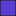

<!doctype html>
<html lang="en">
    <head>
        <meta charset="utf-8">
        <meta http-equiv="X-UA-Compatible" content="IE=edge">
        <meta name="viewport" content="initial-scale=1,user-scalable=no,maximum-scale=1,width=device-width">
        <meta name="mobile-web-app-capable" content="yes">
        <meta name="apple-mobile-web-app-capable" content="yes">
        <link rel="stylesheet" href="css/leaflet.css">
        <link rel="stylesheet" href="css/qgis2web.css"><link rel="stylesheet" href="css/fontawesome-all.min.css">
        <link rel="stylesheet" href="css/leaflet-search.css">
        <link rel="stylesheet" href="css/leaflet-control-geocoder.Geocoder.css">
        <link rel="stylesheet" href="css/leaflet-measure.css">
        <style>
        html, body, #map {
            width: 100%;
            height: 100%;
            padding: 0;
            margin: 0;
        }
        </style>
        <title></title>
    </head>
    <body>
        <div id="map">
        </div>
        <script src="js/qgis2web_expressions.js"></script>
        <script src="js/leaflet.js"></script>
        <script src="js/leaflet.rotatedMarker.js"></script>
        <script src="js/leaflet.pattern.js"></script>
        <script src="js/leaflet-hash.js"></script>
        <script src="js/Autolinker.min.js"></script>
        <script src="js/rbush.min.js"></script>
        <script src="js/labelgun.min.js"></script>
        <script src="js/labels.js"></script>
        <script src="js/leaflet-control-geocoder.Geocoder.js"></script>
        <script src="js/leaflet-measure.js"></script>
        <script src="js/leaflet-search.js"></script>
        <script src="data/parcelas_rizipiscicultura_1.js"></script>
        <script src="data/perimetre_amenager_2.js"></script>
        <script>
        var map = L.map('map', {
            zoomControl:true, maxZoom:28, minZoom:1
        }).fitBounds([[11.926109191480936,-15.51427053104798],[11.94033174174286,-15.497078840138595]]);
        var hash = new L.Hash(map);
        map.attributionControl.setPrefix('<a href="https://github.com/tomchadwin/qgis2web" target="_blank">qgis2web</a> &middot; <a href="https://leafletjs.com" title="A JS library for interactive maps">Leaflet</a> &middot; <a href="https://qgis.org">QGIS</a>');
        var autolinker = new Autolinker({truncate: {length: 30, location: 'smart'}});
        var measureControl = new L.Control.Measure({
            position: 'topleft',
            primaryLengthUnit: 'meters',
            secondaryLengthUnit: 'kilometers',
            primaryAreaUnit: 'sqmeters',
            secondaryAreaUnit: 'hectares'
        });
        measureControl.addTo(map);
        document.getElementsByClassName('leaflet-control-measure-toggle')[0]
        .innerHTML = '';
        document.getElementsByClassName('leaflet-control-measure-toggle')[0]
        .className += ' fas fa-ruler';
        var bounds_group = new L.featureGroup([]);
        function setBounds() {
        }
        map.createPane('pane_Hybrid_0');
        map.getPane('pane_Hybrid_0').style.zIndex = 400;
        var layer_Hybrid_0 = L.tileLayer('http://mt0.google.com/vt/lyrs=y&hl=en&x={x}&y={y}&z={z}', {
            pane: 'pane_Hybrid_0',
            opacity: 1.0,
            attribution: '',
            minZoom: 1,
            maxZoom: 28,
            minNativeZoom: 0,
            maxNativeZoom: 18
        });
        layer_Hybrid_0;
        map.addLayer(layer_Hybrid_0);
        function pop_parcelas_rizipiscicultura_1(feature, layer) {
            var popupContent = '<table>\
                    <tr>\
                        <th scope="row">id</th>\
                        <td>' + (feature.properties['id'] !== null ? autolinker.link(feature.properties['id'].toLocaleString()) : '') + '</td>\
                    </tr>\
                    <tr>\
                        <th scope="row">Perimetro</th>\
                        <td>' + (feature.properties['Perimetro'] !== null ? autolinker.link(feature.properties['Perimetro'].toLocaleString()) : '') + '</td>\
                    </tr>\
                    <tr>\
                        <th scope="row">Nome_produtor</th>\
                        <td>' + (feature.properties['Nome_produtor'] !== null ? autolinker.link(feature.properties['Nome_produtor'].toLocaleString()) : '') + '</td>\
                    </tr>\
                    <tr>\
                        <th scope="row">Posição_</th>\
                        <td>' + (feature.properties['Posição_'] !== null ? autolinker.link(feature.properties['Posição_'].toLocaleString()) : '') + '</td>\
                    </tr>\
                    <tr>\
                        <th scope="row">superficia_m²</th>\
                        <td>' + (feature.properties['superficia_m²'] !== null ? autolinker.link(feature.properties['superficia_m²'].toLocaleString()) : '') + '</td>\
                    </tr>\
                </table>';
            layer.bindPopup(popupContent, {maxHeight: 400});
        }

        function style_parcelas_rizipiscicultura_1_0() {
            return {
                pane: 'pane_parcelas_rizipiscicultura_1',
                opacity: 1,
                color: 'rgba(35,35,35,1.0)',
                dashArray: '',
                lineCap: 'butt',
                lineJoin: 'miter',
                weight: 1.0, 
                fill: true,
                fillOpacity: 1,
                fillColor: 'rgba(93,61,209,1.0)',
                interactive: true,
            }
        }
        map.createPane('pane_parcelas_rizipiscicultura_1');
        map.getPane('pane_parcelas_rizipiscicultura_1').style.zIndex = 401;
        map.getPane('pane_parcelas_rizipiscicultura_1').style['mix-blend-mode'] = 'normal';
        var layer_parcelas_rizipiscicultura_1 = new L.geoJson(json_parcelas_rizipiscicultura_1, {
            attribution: '',
            interactive: true,
            dataVar: 'json_parcelas_rizipiscicultura_1',
            layerName: 'layer_parcelas_rizipiscicultura_1',
            pane: 'pane_parcelas_rizipiscicultura_1',
            onEachFeature: pop_parcelas_rizipiscicultura_1,
            style: style_parcelas_rizipiscicultura_1_0,
        });
        bounds_group.addLayer(layer_parcelas_rizipiscicultura_1);
        map.addLayer(layer_parcelas_rizipiscicultura_1);
        function pop_perimetre_amenager_2(feature, layer) {
            var popupContent = '<table>\
                    <tr>\
                        <th scope="row">id</th>\
                        <td>' + (feature.properties['id'] !== null ? autolinker.link(feature.properties['id'].toLocaleString()) : '') + '</td>\
                    </tr>\
                    <tr>\
                        <th scope="row">perimetre</th>\
                        <td>' + (feature.properties['perimetre'] !== null ? autolinker.link(feature.properties['perimetre'].toLocaleString()) : '') + '</td>\
                    </tr>\
                    <tr>\
                        <th scope="row">sup_ha</th>\
                        <td>' + (feature.properties['sup_ha'] !== null ? autolinker.link(feature.properties['sup_ha'].toLocaleString()) : '') + '</td>\
                    </tr>\
                    <tr>\
                        <th scope="row">gid_perimetre</th>\
                        <td>' + (feature.properties['gid_perimetre'] !== null ? autolinker.link(feature.properties['gid_perimetre'].toLocaleString()) : '') + '</td>\
                    </tr>\
                </table>';
            layer.bindPopup(popupContent, {maxHeight: 400});
        }

        function style_perimetre_amenager_2_0() {
            return {
                pane: 'pane_perimetre_amenager_2',
                opacity: 1,
                color: 'rgba(194,55,55,1.0)',
                dashArray: '',
                lineCap: 'butt',
                lineJoin: 'miter',
                weight: 3.0, 
                fillOpacity: 0,
                interactive: true,
            }
        }
        map.createPane('pane_perimetre_amenager_2');
        map.getPane('pane_perimetre_amenager_2').style.zIndex = 402;
        map.getPane('pane_perimetre_amenager_2').style['mix-blend-mode'] = 'normal';
        var layer_perimetre_amenager_2 = new L.geoJson(json_perimetre_amenager_2, {
            attribution: '',
            interactive: true,
            dataVar: 'json_perimetre_amenager_2',
            layerName: 'layer_perimetre_amenager_2',
            pane: 'pane_perimetre_amenager_2',
            onEachFeature: pop_perimetre_amenager_2,
            style: style_perimetre_amenager_2_0,
        });
        bounds_group.addLayer(layer_perimetre_amenager_2);
        map.addLayer(layer_perimetre_amenager_2);
        var osmGeocoder = new L.Control.Geocoder({
            collapsed: true,
            position: 'topleft',
            text: 'Search',
            title: 'Testing'
        }).addTo(map);
        document.getElementsByClassName('leaflet-control-geocoder-icon')[0]
        .className += ' fa fa-search';
        document.getElementsByClassName('leaflet-control-geocoder-icon')[0]
        .title += 'Search for a place';
        var baseMaps = {};
        L.control.layers(baseMaps,{' perimetre_amenager': layer_perimetre_amenager_2,' parcelas_rizipiscicultura': layer_parcelas_rizipiscicultura_1,"Hybrid": layer_Hybrid_0,}).addTo(map);
        setBounds();
        var i = 0;
        layer_parcelas_rizipiscicultura_1.eachLayer(function(layer) {
            var context = {
                feature: layer.feature,
                variables: {}
            };
            layer.bindTooltip((layer.feature.properties['superficia_m²'] !== null?String('<div style="color: #323232; font-size: 10pt; font-family: \'Arial\', sans-serif;">' + layer.feature.properties['superficia_m²']) + '</div>':''), {permanent: true, offset: [-0, -16], className: 'css_parcelas_rizipiscicultura_1'});
            labels.push(layer);
            totalMarkers += 1;
              layer.added = true;
              addLabel(layer, i);
              i++;
        });
        map.addControl(new L.Control.Search({
            layer: layer_parcelas_rizipiscicultura_1,
            initial: false,
            hideMarkerOnCollapse: true,
            propertyName: 'superficia_m²'}));
        document.getElementsByClassName('search-button')[0].className +=
         ' fa fa-binoculars';
        resetLabels([layer_parcelas_rizipiscicultura_1]);
        map.on("zoomend", function(){
            resetLabels([layer_parcelas_rizipiscicultura_1]);
        });
        map.on("layeradd", function(){
            resetLabels([layer_parcelas_rizipiscicultura_1]);
        });
        map.on("layerremove", function(){
            resetLabels([layer_parcelas_rizipiscicultura_1]);
        });
        </script>
    </body>
</html>
